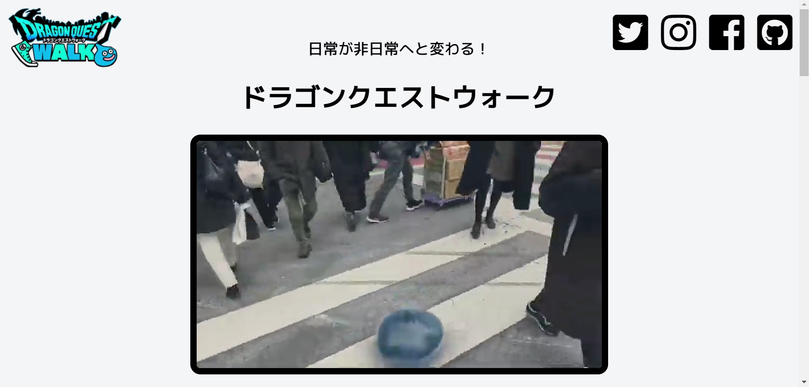

スマホアプリ紹介webサイト
製作理由
企業に提出できるwebサイトを作ろうと思ったのが一番の理由です。
職業訓練校で製作したwebサイトは著作権に配慮しておらず、
初めてコーディングしたサイトということもあってポートフォリオとしての提出は見送りました。
どんなサイトを制作しようか迷っていた所アプリ広告のLPが目に入り、
著作権に配慮しつつ自分の好きなアプリを紹介しようと決めて製作しました。
工夫したところ
javascriptコーディングを工夫しました。 ライブラリ使用は初めての経験だったので、プロパティの設定やDOM構成に躓きながらもなんとか実装にまでたどり着きました。 画面固定のロジックは他サイトを参考にしつつ書いたオリジナルコードで、思い通りの動作をさせる為に試行錯誤した結果、 コールバック関数のネスト構造に頼りました。
改善点
1.デザインがシンプルなあまり殺風景な印象。画像を配置するなどしてデコレーションしたい。 2.jsのロジックが煩雑なので。asyc/await等を使ってリファクタリングしていきたい……。 3.調べながらのコーディングだったのでスピードが遅かった、会社に貢献できるスピードを目指す。